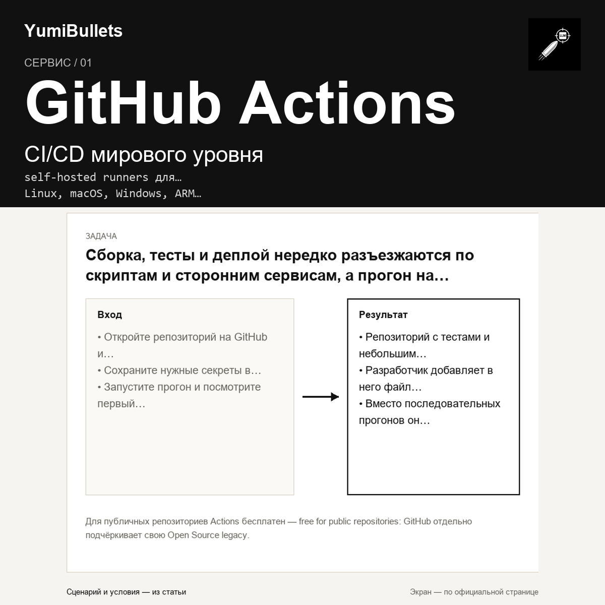

GitHub Actions: что сервис даёт вашему репозиторию
Сборка, тесты и деплой нередко разъезжаются по скриптам и сторонним сервисам, а прогон на нескольких рантаймах превращается в рутину. Если код уже на GitHub, полезно понять, что…

Сборка, тесты и деплой нередко разъезжаются по скриптам и сторонним сервисам, а прогон на нескольких рантаймах превращается в рутину. Если код уже на GitHub, полезно понять, что…